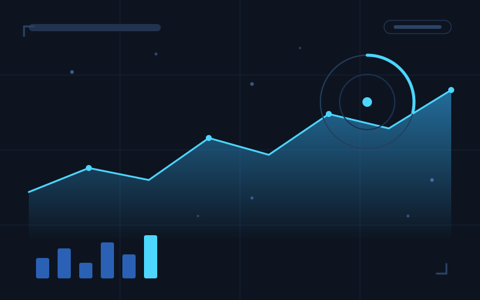

轻记账
移动应用面向日常生活场景的极简记账微信小程序，重点解决快速记录和查看个人收支的问题，支持语音快捷记账、月度收支统计和预算提醒，使用微信云开发完成数据存储与后端能力。
Portfolio · 2026
这里是李嘉骏的个人作品集，收录我在 AI 辅助开发、大语言模型应用与数据可视化方向的项目实践。
面向日常生活场景的极简记账微信小程序，重点解决快速记录和查看个人收支的问题，支持语音快捷记账、月度收支统计和预算提醒，使用微信云开发完成数据存储与后端能力。
面向校园场景的二手交易平台，提供商品发布、关键词检索、站内私信和信用评分等功能。从需求梳理、界面设计到主要接口开发均独立完成，上线测试后累计注册用户超过 300 人。

城市实时交通与天气数据可视化大屏，用于集中展示交通、天气和城市运行信息。通过多数据源轮询聚合数据，并结合 SVG 图表、Canvas 粒子地图和响应式布局实现大屏可视化展示。
基于大语言模型的课程问答助手。用户上传课程资料后，系统能够建立知识索引，根据课程内容回答问题，并提供引用出处和知识点小测，帮助学生快速复习和整理课程重点。
我是李嘉骏，一名软件工程专业在读学生，目前主要关注AI 辅助开发与大语言模型技术。
平时主要使用 Python、Java 和 TypeScript 进行项目开发，也在持续学习前后端开发、数据可视化和 AI 应用构建。